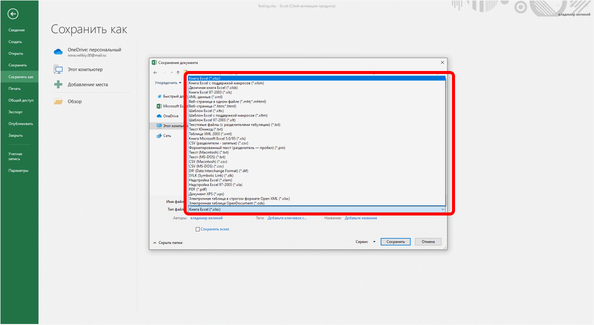
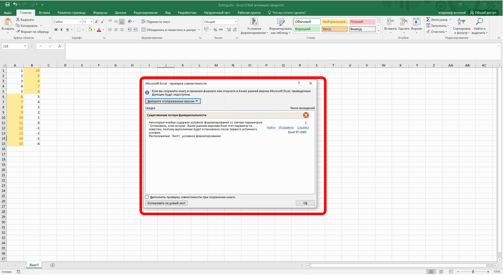
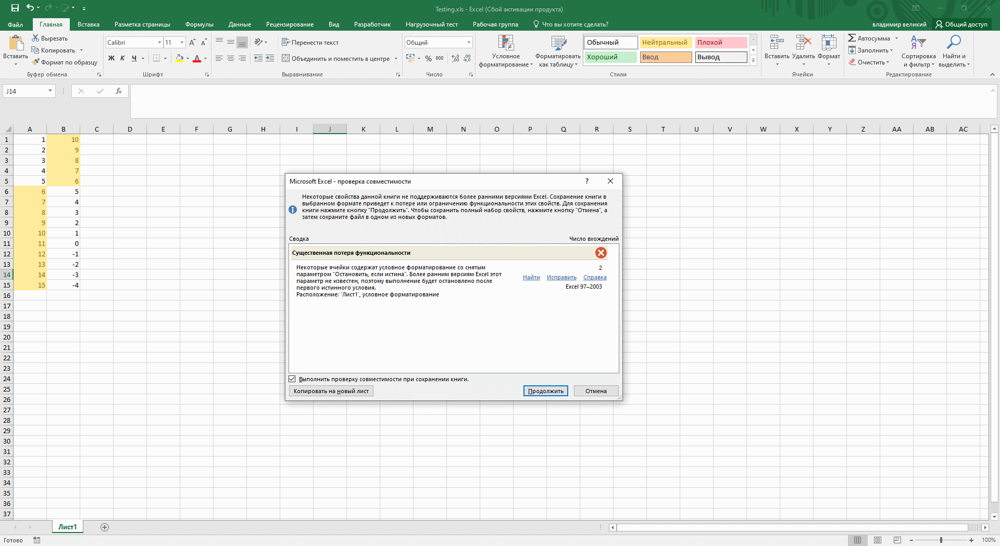
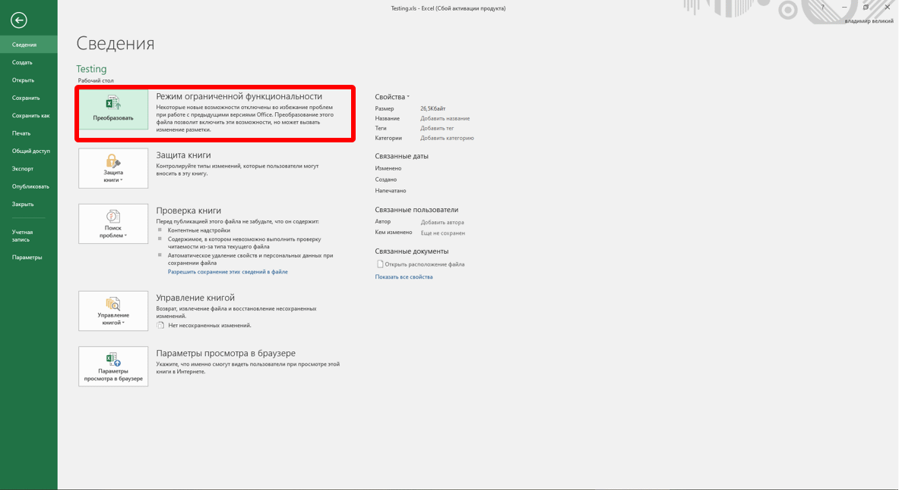

По умолчанию все файлы сохраняются в том же формате, в котором были открыты. Новые документы и файлы Excel 2019 сохраняются в формате Документ Excel, файлы старых версий сохраняются в формате Документ Excel 97-2003.
При сохранении можно изменить формат файла. Для этого в окне Сохранение документа щелкните по кнопке с указанием типа файла и в появившемся меню выберите необходимый формат (рис. 2.16).

Рис. 2.16. Сохранение файла в другом формате
Особенности сохранения документов Excel 2019 в формате старых версий Excel
Многие возможности Excel 2019 не поддерживаются в старых версиях.
При сохранении документа, созданного в Excel 2019, в формате Документ Excel 97-2003 в нем будут произведены изменения.
Для проверки совместимости текущего документа с предыдущими версиями Excel нажмите вкладку Файл, выберите вкладку Сведения, нажмите кнопку Поиск проблем и выберите Проверка совместимости.
В окне результатов проверки совместимости (рис. 2.17) будет отображен список несовместимых элементов.

Рис. 2.17. Сводка проверки совместимости документа с предыдущими версиями Excel
Такое же окно появляется и при попытке сохранения файла формата Excel 2019 в формате Excel 97-2003 (рис. 2.18).

Рис. 2.18. Сводка проверки совместимости документа с предыдущими версиями Excel
Необходимо внести изменения в книгу или для сохранения с потерями функциональности нажать кнопку Продолжить (см. рис. 2.18).
Преобразование файлов предыдущих версий Excel в формат Excel 2019
При сохранении файла, созданного в одной из предыдущих версий Excel, в файл Excel 2019, появляется новый файл, а исходный файл остается в той же папке. Вместо этого можно преобразовать файл таким образом, чтобы файл формата Excel 2019 заменил старый файл.

Рис. 2.19. Преобразование файлов предыдущих версий Excel в формат Excel 2019